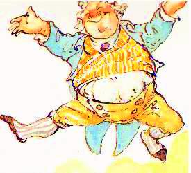

Oran do'n Bhriogais
Le Donnchadh Ban Mac an t-Saoir
A Song to the Breeches
Chant des Culottes
by/par Duncan Ban McIntyre
Tune - Mélodie"Uilleachan, an tig thu chaoidh"
also known as Crowdy
Sequenced by Christian Souchon
|
As stated in John Lorne Campbell's "Highland songs of the '45", the tune matching this poem is found on page 86 of Simon Fraser's Collection, i.e. N°210, "Uilleachan, an tig thu chaoidh" (Willie, will you ever return), that does tally with it very well.
However the tune noted by J.L. Campbell on the appendix to his book is N°187 "Sean-Triubhais Uilleachain" (Willie's Auld Trews) also scanning the lyrics accurately, to be found on page 76. The latter tune is very similar to "This is no my Ain House" quoted on the page of the present site dedicated to the Jacobite version of this nursery rhyme collected (if not composed) by James Hogg. |
Comme l'indique John Lorne Campbell dans ses "Chants des Highlands de 1745", la mélodie sur laquelle ce poème se chante se trouve page 86 de la Collection de Simon Fraser. Effectivement on trouve à cette page la mélodie N° 210, "Uilleachan, an tig thu chaoidh" (Willie, si tu reviens un jour) qui épouse ce texte.
Cependant la mélodie que J.L. Campbell cite en annexe est le N°187, à la page 76 de ladite Collection, "Sean Triubhais Uilleachain" (Les vieilles culottes de Willie), qui est tout aussi bien adaptée. Ce second morceau est très proche de "This is no my Ain House" que l'on trouvera sur ce site à la page consacrée à la version Jacobite de la chanson de nourrice recueillie -sinon composée- par James Hogg. |
Sheet music

|
A SONG TO THE BREECHES
Lay And since the light-grey breeches This year make us so sorrowful, Such things were never seen on us; Nor do we care to keep them on; And had we all been faithful To the King who asked for aid from us, We would not be for e'er beheld A-yielding to this sort of garb. 1. Ill is our fate, that the young Prince Has met with many a misfortune, And that King George his dwelling makes Where Charles should now be sojourning; The folk who know are telling us That he to London has no right, That his own home's in Hanover, That he's a stranger over us. 2. And it's the King who's not our own Who sorely has insulted us, Before he tame us utterly 'Twere time to go and fight with him; For all the rudeness he has shown, Offensiveness, contentiousness, Taking our clothes in spite of us By treating us with violence [l]. 3. And since we put the trousers on That clothing does not please us well, Pinching us around our houghs Uncomfortable 'tis to wear; And erstwhile we were spirited, With our plaids on beneath our belts, Though now indeed we're commonly Clothing ourselves in saddle-cloths. [2] 4. Methinks this is a poor reward To men who proved their hardihood, To take away their ancient garb Though William conquered with their aid; [3] We cannot now live happily Since changèd has our clothing been, Each other we'll not recognise On market days or gatherings. 5. At one time in my earthly life I never thought that I should have Trousers as my covering, Which fit a man unhandsomely; And though I'm making use of them, I ne'er have taken happily To the garb that comes unnaturally To the people to whom I belong; 6. Unlucky this new dress of ours, Uglily it does sit on us, So tightly does it cling to us, We'd sooner see no more of it ; There's buttons all around our knees And buckles closely fastening, And now the breeks are doubled close [3bis] Round the backside of every man. 7. We'll get hats of dark-grey hue To cover up our heads for us, And coats so smooth and shiny too As if a mill had polished them ; Though that may keep the cold from us, It leaves us not so proud and gay That it will please our gentlemen, Our commoners, or our yeomanry. 8. And ne'er will we be pleased with it A-walking in the lonely glens. Or when we go a-shieling-wards Or anywhere that lassies are [4] King George it is who's wrongèd us, And I am much in wrath for it, Since he did take the kilt away And each dress that belonged to us. 9. And every one in Parliament Was wrong, with all their learning, When on the Campbells they did put The tightness of the trousers; Though they it was who aided them The year that the rebellion came, [5] Each man of them enlisting in The Militia which they did raise. 10. And they were brave and active too, As long as there was fighting on, But few of them will e'er again Go into camp along with him; Since he did take our dress away And left us all in misery, He's done to us each thing he could Thinking to bring woe on us. 11. And now 'tis we who surely know The mercy that Duke William's shown, Since he's left us like prisoners Without our dirks, without our guns, Without our belts, without our swords, We may not even pistols have, For England has command of us Since she did wholly conquer us. 12. There's anger too and misery In many a man now at this time, Who was in William's camp before Who's now no better that he's won; And if Prince Charles to us returned We would arise and follow him, The scarlet plaids once more be worn And all the guns be out again. Translated by John Lorne Campbell in "Highland Songs of the '45" (1932) |
ORAN DO'N BHRIOGAIS
Luinneag 'S o tha a'bhriogais liath-ghlas Am bliadhna cur mulaid oirnn, 'S è'n rud nach fhacas riamh oirnn 'S nach miann leinn a chumail oirnn; 'S nam biomaid uile dîleas Do'n Righ bha toirt cuiridh dhuinn, Cha n-fhaicte sinn gu dilinn A'striochdadh do'n chulaidh so. 1. Is olc an seôl duinn, am Prionns' ôg A bhith fo mhôran duilichinn Us Righ Deôrsa a bhith chomhnuidh Far 'm bu chôir dhà tuineachas; Tha'luchd-eôlais a' toirt sgeôil duinn Nach robh côir air Lunnainn aig', 'S è Hanôbhar an robh 'sheôrsa, Is coigreach oirnn an duine sin. 2. 'S è'n Righ sin nach buineadh dhuinn, Rinn dîmeas na dunach oirnn, Mu'n ceannsaich e buileach sinn, B'è 'n t-am dol a chumasg ris; Na rinn e oirnn a dh'an-tlachd, A mhi-thlachd,'s a dh'aimhreit, Ar n-eudach thoirt gun taing dhinn, Le h-ainneart a chumail ruinn. [1] 3. 'S o'n a chuir sinn suas a' bhriogais Gur neo-mhiosail leinn a'chulaidh ud, 'Gan teannadh mu na h-iosgannan, Gur trioblaideach leinn umainn iad; Us bha sinn roimhe misneachail, 'S na breacain fo na criosan oirnn, Ged thà sinn ann am bitheantas A nis a' cur nan sumag oirnn; [2] 4. 'S ar leam gur h-olc an duais è Do na daoine chaidh 'sa chruadal, An aodaichean thoirt uapa Ge do bhuannaich Diùc Uilleam leo. [3] Cha n-fhaod sinn bhith sùlasach O'n chaochail ar culaidh sinn, Cha n-aithnich sinu a chéile Là féille no cruinneachaidh. 5. Us bha uair-éigin'san t-saoghal Nach saoilinn gun cuirinn orm Briogais air son aodaich, 'S neo-aoibheil air duine i; 'S ged thà mi deanamh iris dith Cha d'rinn mi bonn sùlais Ris an deise nach robh dàimheil Do'n phàirtidh dh'am buinninn-sa. 6. 'S neo-sheannsar a'chulaidh i, Gur grànda leinn umainn i, Cho teann air a cumaclh dhuinn 'S nach b'fheairrde leinn tuilleadh i ; Bidh putain anns na glùitrean, Us bucalan 'gan dùnadh, 'S a'bhriogais air a dùbladh [3 bis] Mu chùlaibh a h-uile fir. 7. Gheibh sinn adan ciar-dhubh Chur dion air ar mullaichean, Ifs casagan cho sliogta 'S a mhinicheadh muileann iad; Ged chumadh sin am fuachd dhinn Cha n-fhàg e sinn cho uallach, 'S gun toilich e ar n-uaislean, Ar tuath, no ar cumanta I, 8. Cha taitinn e gu bràth ruinn A choiseachd nan gleann-fàsaich, 'N uair rachamaid a dh'àirigh, No dh'àit'am biodh cruinneagan [4] 'S è Deàrsa rinn an eucoir, 'S ro-dhiombach tha mi féin deth, Oon thug e dhinn an éileadh, 'S gach eudach a bhuileadh dhuinn. 9. 'S bha h-uile h-aon de'n Phàrlamaid Fallsail le'm fiosrachadh, 'N uair chuir iad air na Caimbeulaich Teanndachd nam briogaisean ; 'S gur h-iad a rinn am feum dhaibh A' bhliadhna thàin' an streupag, [5] A h-uile h-aon diubh'g éirigh Gu léir am milîsi dhaibh; 10. 'S bu cheannsalach, duineil iad 'San am an robh an cumasg ann, Ach's gann daibh gun cluinnear iad A champachadh tuilleadh leis; O'n thug e dhinn an t-aodach, 'S a dh'fhàg e sinn cho faontrach, 'S ann rinn e oirnn na dh'fhaodadh e, Shaoileadh e chur mulaid oirnn. 11. Is ann a nis tha fios againn An t-iochd a rinn Diuc Uilleam ruinn, 'N uair dh'fhàg e sinn mar phriosanaich Gun bhiodagan, gun ghunnachan, Gun chlaidheamh, gun chrios tarsuinn oirnn, Cha n-fhaigh sinn pris nan dagachan, Tha comannnd aig Sasunn oirnn O smachdaich iad gu buileach sinn; 12. Tha angar agus duilichinn 'San am so air iomadh fear Bha'n campa Dhiùc Uilleam, Us nach fheairrd' iad gun bhuidhinn e; Nan tigeadh oirnne Teàrlach 'S gun éireamaid'na champa, Gheibhte breacain chàrnaid, 'S bhiodh aird air na gunnachan. |
CHANT DES CULOTTES
Refrain C'est donc le port de la culotte Qu'on nous impose désormais, Cette horreur qu'ici nul ne porte Et ne voudra jamais porter! Voila comment on récompense Quiconque fut fidèle au roi: Il lui faut pour sa pénitence Passer cet accoutrement-là! 1. Pourquoi fallait-il que la guigne S'acharnât ainsi sur Charlie, Que Georges qui n'en est point digne Occupât son royal logis? Ceux qui s'y connaissent nous disent Que sur Londres il n'a point de droits, Qu'il règne à Hanovre, à sa guise, Mais ne nous dicte point sa loi! 2. Et c'est ce roi de contrebande Qui nous avilit à ce point Pour nous mâter. De nous défendre Il serait grand temps, je crois bien, Et de châtier son arrogance, Sa haineuse agressivité, Quand il prétend par la violence Nous déguiser comme il lui plait. [1] 3. Quiconque essaya ce costume Sait combien il ne nous sied pas, Combien son port nous importune, Et comme il serre les tibias. Jadis, nous portions avec zèle, Nos plaids fixés aux ceinturons, Mais ce sont des tapis de selle [2] Que désormais nous arborons. 4. C'est donc là le sort lamentable Qu'on réserve à des gens de cœur: On leur prend leurs antiques hardes. Qui, sans eux, eût été vainqueur? [3] Finie la vie joyeuse et bonne, Depuis qu'on nous a travestis. Nous ne reconnaissons personne Lorsque nous sommes réunis. 5. Jamais je n'eus en ce bas monde Imaginé qu'il me faudrait Revêtir la culotte immonde Qui vous fait un homme si laid. Et quand à présent il m'arrive D'en passer, c'est à contre-cœur, Avec à l'âme une plaie vive: C'est contre l'usage et l'honneur. 6. Fi donc de ces nouvelles fripes Bien faites pour d'autres que nous! A nos jambes elles s'agrippent Et notre patience est à bout. Fi donc des boucles que l'on serre, De ces boutons sur les genoux, Et de cette double barrière [3 bis] Qui emprisonne nos dessous! 7. Pour recouvrir nos pauvres têtes Nous aurons des chapeaux tout gris Des manteaux luisants que peut-être Quelque machine aura polis. S'ils protègent de la froidure Nous n'en sommes ni fiers, ni gais, Comme les Lords et les Communes Et les tenanciers le voudraient. 8. Qui de nous peut se satisfaire Ainsi vêtu, de s'en aller A la rencontre des bergères Des burons en haut des vallées? [4] Voilà donc l'œuvre du roi Georges; Et ce qui me met en courroux! Il a vidé nos garde-robes Que nous aimions par dessus tout. 9. Ces Messieurs les Parlementaires, Se sont trompés grossièrement Quand aux Campbell ils imposèrent Cet incommode accoutrement. Et pourtant ils eurent leur aide Quand éclata la rébellion. [5] Pas un seul homme qui n'accepte De rejoindre leurs bataillons. 10. Et c'est avec zèle et courage Qu'ils furent de tous les combats. Quant à retourner à l'ouvrage, La plupart ne le voudront pas. On nous a pris notre costume Notre honneur ne compte pour rien. On a tout fait, on le présume, Pour provoquer notre chagrin. 11. Oui, c'est à notre tour d'apprendre Comment Cumberland a pitié Sans fusils, sans dagues qui pendent, Il fit de nous des prisonniers. Sans nos ceinturons, sans nos sabres, Privés même de pistolets, L'Anglais fait de nous ses esclaves. Il tient le pays tout entier. 11. Plus d'un, réduit à la misère, Sent monter la colère en lui. Soldat de Cumberland naguère Il n'en tire point de profit. Que le Prince Charles revienne, Tous, aussitôt, nous le suivrons, Revêtant nos beaux plaids de laine, Pistolets à nos ceinturons! (Trad. Ch. Souchon (c) 2009) |
|
[1]
Taking our clothes in spite of us
: The use of the Highland garb was prohibited to
all Highlanders
in 1747 under George II: see
"The Stolen Breeks"
.
In disaffected districts the people were required to take an oath that they neither possessed arms, nor made use of the Highland garb. This piece of legislation remained in force until 1782. The disarming of the Highlands was both necessary and desirable, but the abolition of the Highland dress was an action of peculiar cruelty, being unjust in its incidence and deeply wounding to the pride of the whole country, besides dealing the home industry of cloth- making a blow from which it took long to recover. [2] Saddle-cloths : The application of the Disclothing Act all over the Highlands, with its penalties of six months' imprisonment and seven years' transportation for the first and second offences respectively, made it often necessary for the Highlanders to adopt the most ludicrous garments in order to comply with its provisions, as in the remote parts of the country Lowland dress was of course quite unobtainable. [3] Though William (Cumberland) conquered with their aid : The great injustice of these Acts lay in the fact that they were applied to loyal and disloyal alike, with the result that the greater part of the Highlanders, many of whom, like Mclntyre, had fought for the Government, were afflicted with a gratuitous and grossly unfair punishment. (3bis) Doubled-close : this comparison with the former clothing seemed to me apt to give the answer to the haunting question "Do they wear something underneath?". The illustration below allows another interpretation: "fall front breeches" had a flap covering the front opening and were fastened up with a row of buttons at either side. [4] When we go a-shieling-wards : The summer herding of cattle in the Highlands was undertaken by the young women, who lived in the mountain huts or "shielings" from June to September. This practice was abandoned when the common-pastures were taken away from the townships and turned into sheep-runs. [5] The Campbells throughout the Rebellion distinguished themselves by their loyalty and steadfastness in the Government cause. The Argyllshire Militia, referred to elsewhere by the poet, fought at Falkirk and Culloden on the Hanoverian side. Nevertheless the Campbells shared the indignity of being deprived of arms and garb with the rebels they had done so much to defeat. These notes (except 3bis) are taken from John Lorne Campbell's 'Highland songs of the '45'. |
[1]
Nous déguiser comme il lui plait
: L'usage du costume des Highlands fut interdit à tous les hommes des Hautes Terres en 1747 sous Georges II: voir
"Les culottes volées"
.
Dans les régions non visées par l'Acte, on obligea les gens à prêter serment de ne pas détenir d'armes et de ne pas revêtir le costume des Highlands. Ces textes restèrent en vigueur jusqu'en 1782. Le désarmement des Highlands était certes une mesure nécessaire et souhaitable, mais l'interdiction du tartan était une vexation tout à fait humiliante pour le pays tout entier et injuste dans ses effets. En outre elle portait à toute une activité locale de confection un coup dont elle mit très longtemps à se remettre. [2] Tapis de selle :L'application de ce 'Disclothing Act' dans tous les Highlands et les sanctions pénales dont il était assorti, - 6 mois de prison, 7 années de déportation en cas de récidive - contraignit plus d'un Highlander à s'affubler d'oripeaux ridicules, faute de pouvoir, dans les parties du pays éloignées des Lowlands, se procurer les vêtements requis. [3] Qui, sans eux, eût été vainqueur? : Le caractère injuste de ces lois réside dans le fait qu'elles s'appliquaient, sans distinction, à tous les Highlanders, qu'ils aient été loyaux ou déloyaux, infligeant à ces derniers, même s'ils s'étaient battus dans le camp gouvernemental comme les McIntyre, une punition sans fondement et contraire à l'équité. (3 bis) Double barrière : cette comparaison avec l'ancien vêtement me semblait répondre à la question lancinante: "Portent-ils quelque chose en dessous?" L'illustration ci-après autorise une autre interprétation: certains hauts de chausses présentaient une rangée de boutons de part et d'autre d'un large rabat médian. [4] Les bergères des burons : La garde estivale des troupeaux était confiée aux jeunes femmes dans les Highlands, lesquelles demeuraient de juin à septembre dans des abris de montagne nommés "shielings" (burons). Cette pratique fut abandonnée quand la commune pâture au village fit place à la transhumance. [5] Les Campbell , pendant toute la durée du soulèvement, se signalèrent par leur indéfectible loyauté envers l'autorité royale. La Milice d'Argyll, évoquée plus loin par le poète, combattit à Falkirk et à Culloden dans le camp hanovrien. On n'épargna pas pour autant aux Campbell l'indignité d'être privés de leurs armes et de leur costume, tout comme les rebelles qu'ils avaient si bien contribué à vaincre. Ces notes (sauf la 3 bis) sont tirées des 'Chants des Highlands de 1745' de John Lorne Campbell. |

|
des chants étudiés dans ELF JAKOBITENLIEDER IN GÄLISCHER SPRACHE un essai en allemand au format LIVRE DE POCHE 
de Christian Souchon |
zu der Abhandlung ELF JAKOBITENLIEDER IN GÄLISCHER SPRACHE einem deutschsprachigen TASCHENBUCH
von Christian Souchon |
is one of the songs studied in ELF JAKOBITENLIEDER IN GÄLISCHER SPRACHE presented in German as a PAPERBACK BOOK
by Christian Souchon |
Cliquer sur le lien ou l'image - Klicke auf den Link oder auf das Bild - Click link or picture for more info